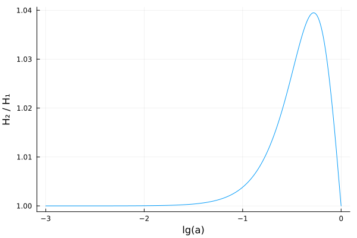

Creating extended models
This tutorial shows how to create extended (beyond-ΛCDM) models.
As a simple example, we will replace the cosmological constant Λ with equation of state $P(t) / \rho(t) = w(t) = -1$ in the pure ΛCDM model with the w₀wₐ-parametrization from Chevallier, Polarski (2000) and Linder (2002) with equation of state
\[w(t) = w_0 + w_a (1 - a(t)).\]
With this equation of state, solving the background continuity equation
\[\frac{\mathrm{d} \rho(t)}{\mathrm{d}t} = -3 H(t) \, (ρ(t) + P(t)) = -3 H(t) \, \rho(t) \, (1 + w(t))\]
with the ansatz $\rho(t) = \rho(t_0) \, a(t)^m \exp(n (1 - a(t)))$ gives $m = -3 (1 + w_0 + w_a)$, $n = -3 w_a$ and hence
\[\rho(t) = \rho(t_0) \, a(t)^{1 + w_0 + w_a} \exp(w_a (1 - a(t))).\]
Following Bertschinger & Ma (equation 30), the perturbation equations are
\[\begin{aligned} \dot{δ} &= -(1 + w) (θ - 3 \dot{Φ}) - 3 \frac{\dot{a}}{a} (c_s^2 - w) δ, \\ \dot{θ} &= -\frac{\dot{a}}{a} (1 - 3w) θ - \frac{\dot{w}}{1+w} θ + \frac{c_s^2}{1+w} k^2 δ - k^2 σ + k^2 Ψ, \end{aligned}\]
with initial (adiabatic) conditions $δ = -\frac{3}{2} (1+w) Ψ$ and $θ = \frac{1}{2} k^2 t Ψ$.
Create the symbolic component
SymBoltz.jl represents each component of the Einstein-Boltzmann equations as a partial/incomplete ModelingToolkit.jl ODESystem. These are effectively "chunks" of logically related parameters, variables, equations and initial conditions that are composed together into a full/complete cosmological model. Let us create a component for the w₀wₐ-parametrization:
using ModelingToolkit # must be loaded to create custom components
using SymBoltz: t, D, ϵ, k # load conformal time and perturbation book-keeper
# Create a function that creates a symbolic w0wa dark energy component
function w0wa(g; kwargs...)
# 1. Create parameters
pars = @parameters w0 wa ρ0 Ω0 cs²
# 2. Create variables
vars = @variables ρ(t) P(t) w(t) ẇ(t) δ(t) θ(t) σ(t)
# 3. Specify background equations (~ is equality in ModelingToolkit)
eqs0 = [
w ~ w0 + wa * (1 - g.a) # equation of state
ẇ ~ D(w)
ρ ~ ρ0 * abs(g.a)^(-3 * (1 + w0 + wa)) * exp(-3 * wa * (1 - g.a)) # energy density # TODO: get rid of abs
P ~ w * ρ # pressure
] .|> SymBoltz.O(ϵ^0) # O(ϵ⁰) multiplies all equations by 1 (no effect, but see step 5)
# 4. Specify perturbation (O(ϵ⁰)) equations (D is the conformal time derivative)
eqs1 = [
D(δ) ~ -(1 + w) * (θ - 3*g.Φ) - 3 * g.ℰ * (cs² - w) * δ # energy overdensity
D(θ) ~ -g.ℰ * (1 - 3*w) - D(w) / (1 + w) * θ + cs² / (1 + w) * k^2 * δ - k^2 * σ + k^2 * g.Ψ # momentum
σ ~ 0 # shear stress
] .|> SymBoltz.O(ϵ^1) # O(ϵ¹) multiplies all equations by ϵ, marking them as perturbation equations
# 5. Specify initial conditions for perturbations
ics1 = [
δ ~ -3/2 * (1+w) * g.Ψ
θ ~ 1/2 * (k^2*t) * g.Ψ
] .|> SymBoltz.O(ϵ^1)
# 6. Specify relationships between parameters
defaults = [
ρ0 => 3/8π * Ω0
]
# 7. Pack everything into an ODE system
return ODESystem([eqs0; eqs1], t, vars, pars; initialization_eqs=ics1, defaults, kwargs...)
endw0wa (generic function with 1 method)Create the standard and extended models
We can now create both the standard ΛCDM model, and then recreate it with the cosmological constant replaced by the w₀wₐ-component to construct the extended w₀wₐCDM model:
# TODO: start with M1 from the very top, then add M2 later
using SymBoltz
M1 = ΛCDM(name = :ΛCDM)
X = w0wa(M1.g; name = :X)
M2 = ΛCDM(Λ = X, name = :w0waCDM)w0waCDM
├─ g
├─ G
├─ γ
├─ ν
├─ c
├─ b
│ └─ rec
├─ h
└─ XSolve and compare the models
Now set some parameters and solve both models up to one perturbation wavenumber. For the ΛCDM model:
θ1 = [
M1.γ.T0 => 2.7
M1.c.Ω0 => 0.27
M1.b.Ω0 => 0.05
M1.ν.Neff => 3.0
M1.g.h => 0.7
M1.b.rec.Yp => 0.25
]
ks = 1.0
sol1 = solve(M1, θ1, ks)Cosmology solution with stages
1. background: solved with Rodas5P, 31 points
2. thermodynamics: solved with Rodas5P, 12717 points
3. perturbations: solved with KenCarp4, 51-51 points, x1 k ∈ [1.0, 1.0] H₀/c (linear interpolation in-between)And for the w₀wₐCDM model:
θ2 = [
θ1; # extend previous parameter list
M2.X.w0 => -0.9
M2.X.wa => 0.2
M2.X.cs² => 1.0
]
sol2 = solve(M2, θ2, ks)Cosmology solution with stages
1. background: solved with Rodas5P, 31 points
2. thermodynamics: solved with Rodas5P, 13015 points
3. perturbations: solved with KenCarp4, 54-54 points, x1 k ∈ [1.0, 1.0] H₀/c (linear interpolation in-between)Let us compare $H$ as a function of the (logarithm of the) scale factor $a$:
lgas = range(-3, 0, length=500)
H1s = sol1(log10(M1.g.a), lgas, M1.g.H)
H2s = sol2(log10(M2.g.a), lgas, M2.g.H)
using Plots
plot(lgas, H2s ./ H1s; xlabel = "lg(a)", ylabel = "H₂ / H₁", label = nothing)